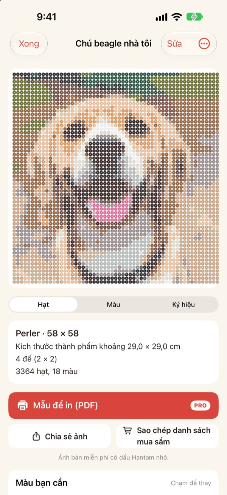
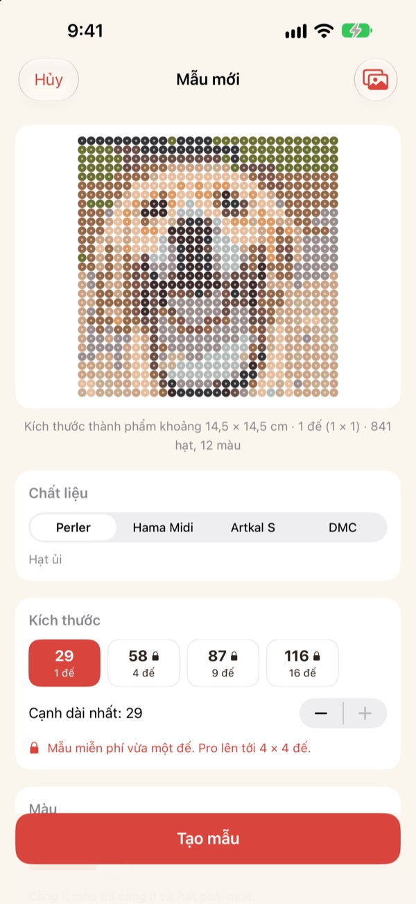
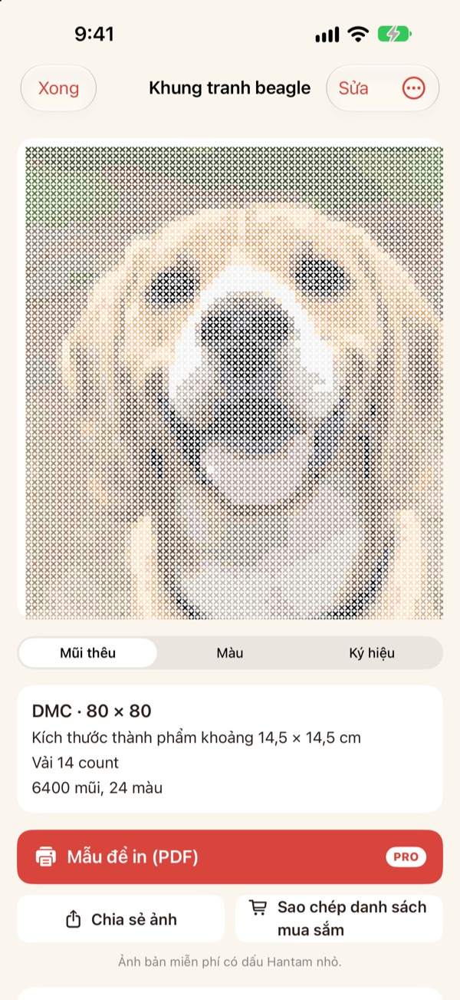
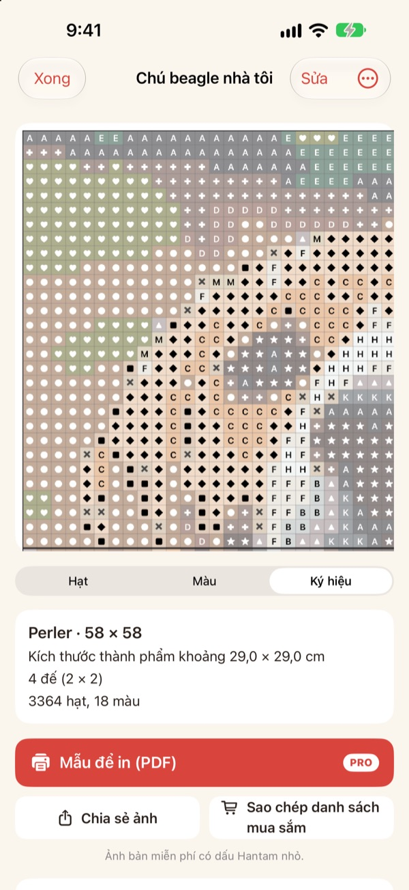
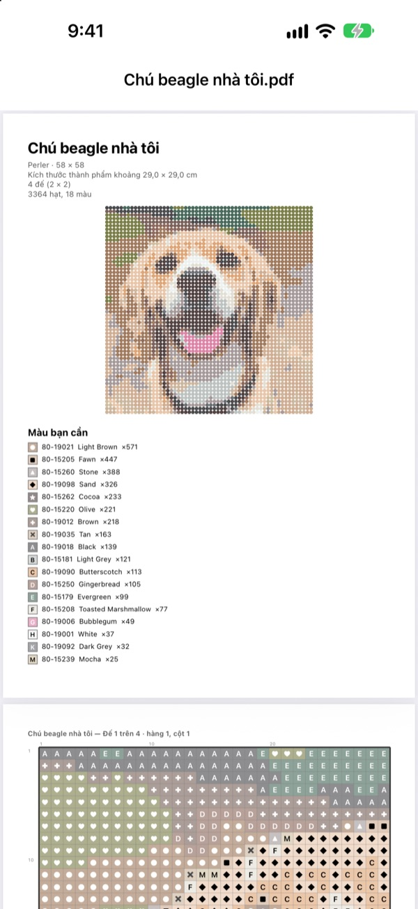

Một tấm ảnh
thành một mẫu
Chọn ảnh thú cưng, ảnh chân dung hay nhân vật bạn thích. Hantam biến nó thành mẫu hạt ủi hoặc thêu chữ thập, khớp với những màu bạn mua được.
Miễn phí cho mẫu cỡ một bảng. Ảnh không rời khỏi iPhone của bạn.

Thử với một tấm ảnh
Cùng cách ghép màu như trong ứng dụng, dùng bảng màu thật của Perler. Đổi kích thước, số màu, hoặc thử bằng ảnh của bạn.
Làm mẫu thì dễ, khớp với hạt thật mới khó
Pixel hóa ảnh bằng ứng dụng chỉnh ảnh thông thường sẽ ra những màu không loại hạt hay chỉ nào có. Rồi bạn phải đoán mỗi ô lấy hạt từ hũ nào và tự đếm cần mua bao nhiêu mỗi màu. Hantam chỉ chọn trong những màu có bán thật và cho biết chính xác bạn cần bao nhiêu.
Màu thật, mã màu thật
Chọn hạt Perler, Hama Midi, Artkal S hoặc chỉ DMC. Mỗi ô được gán một màu mà hãng đó thật sự bán, kèm mã màu.
Bạn tự chọn kích thước và số màu. Mẫu lớn được chia thành các bảng 29 × 29.

Thêu chữ thập cũng được
Chọn chỉ DMC, cùng tấm ảnh sẽ thành mẫu thêu chữ thập. Chọn vải Aida 11, 14, 16 hoặc 18 count, Hantam cho thấy kích thước thành phẩm và số mũi của từng màu.

Biết ngay cần mua gì
Chuyển sang mẫu ký hiệu để làm theo từng ô, có đường đậm ở mỗi mép bảng hoặc mỗi 10 mũi. Xem mỗi màu cần bao nhiêu hạt rồi chạm Sao chép danh sách mua sắm một lần là xong.
Chạm vào một ô để đổi, hoặc thay một màu bằng màu khác trên toàn mẫu.

In ra và bắt tay làm
Với Pro, xuất Mẫu để in (PDF): trang đầu là danh sách màu, các trang sau là mẫu ký hiệu chia theo từng bảng.

Ba bước là có mẫu
- 1
Chọn ảnh
Thú cưng, khuôn mặt, logo, nhân vật đều được. Ảnh có chủ thể rõ ràng sẽ đẹp nhất.
- 2
Chọn hạt hoặc chỉ
Chọn hãng, kích thước và số màu.
- 3
Bắt tay làm
Làm theo mẫu trên màn hình hoặc in ra với Pro.
Chất liệu và kích thước
- Perler · Hama Midi · Artkal S
- Hạt ủi, bảng 29 × 29, mỗi hạt khoảng 5 mm
- DMC
- Chỉ thêu chữ thập trên vải Aida 11, 14, 16 hoặc 18 count
- Miễn phí
- Hạt tối đa 1 bảng (29 ô), chỉ tối đa 40 mũi ở cạnh dài
- Pro
- Hạt tối đa 4 × 4 bảng (116 ô), chỉ tối đa 200 mũi
- Số màu
- Từ 2 đến 50 màu mỗi mẫu
Perler, Hama, Artkal và DMC là nhãn hiệu của các chủ sở hữu tương ứng. Hantam không liên kết với họ. Màu trên màn hình có thể hơi khác so với thực tế.
Bắt đầu miễn phí, mẫu lớn và in ấn có Pro
Miễn phí
- Mẫu tối đa một bảng (thêu 40 mũi)
- Mọi hãng: Perler, Hama, Artkal và DMC
- Số lượng từng màu, danh sách mua sắm, đổi màu
- Lưu tối đa 3 mẫu
- Chia sẻ ảnh có dấu Hantam nhỏ
Hantam Pro
- Mẫu PDF để in
- Tối đa 4 × 4 bảng (thêu 200 mũi)
- Lưu mẫu không giới hạn
- Ảnh không có dấu
- Mọi công cụ pixel art
Gói tháng hoặc gói năm, hoặc mua một lần dùng trọn đời
Bạn cũng có thể tặng Pro cho bạn bè ngay trong ứng dụng.
Câu hỏi thường gặp
Ảnh của tôi có bị tải lên đâu không?
Không. Ảnh và mẫu chỉ được xử lý và lưu trên iPhone của bạn.
Màu trên màn hình hơi khác hạt của tôi.
Màn hình hiển thị màu khác với nhựa và chỉ thật. Chạm vào một màu trong danh sách để đổi sang màu gần hơn cùng hãng.
Mẫu có thể lớn đến đâu?
Bản miễn phí là một bảng 29 × 29, thêu tối đa 40 mũi ở cạnh dài. Pro lên tới 4 × 4 bảng (116 hạt) hoặc 200 mũi.
Ảnh nào cho kết quả đẹp?
Ảnh chỉ có một chủ thể và nền đơn giản. Càng ít màu mẫu càng gọn, nên nếu trông rối, hãy giảm số màu.
Tôi vẫn vẽ pixel art được chứ?
Được. Pixel hóa ảnh, vẽ theo 110 mẫu và làm hoạt ảnh từng khung hình vẫn còn đủ. Mọi công cụ pixel art đều có trong Pro.
Làm sao khôi phục giao dịch mua?
Mở cài đặt trong ứng dụng và chạm Khôi phục giao dịch mua. Dùng đúng Tài khoản Apple đã mua Pro.
Làm sao hủy gói đăng ký?
Vào Cài đặt iPhone › tên của bạn › Đăng ký và chọn Hantam. Gói trọn đời chỉ trả một lần và không gia hạn.
Báo lỗi hoặc góp ý ở đâu?
Nhanh nhất là gửi phản hồi từ cài đặt trong ứng dụng. Bạn cũng có thể gửi email đến địa chỉ bên dưới hoặc nhắn Instagram (@lee25_ios).
Câu hỏi, báo lỗi và ý tưởng xin gửi về leeo@kakao.com.